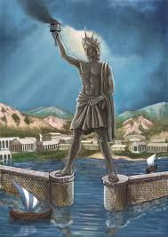

Antik Çağ'da Rodos Adası'ndaki Rodos şehrinin limanının girişinde bulunan, Yunan Güneş Tanrısı Helios'un heykelidir.
MÖ 305'te Büyük iskender’in ardılları olan Makedonyalı Antigonitler Rodos'a saldırmış ve kuşatma 1 yıl sürmüştür. MÖ 304'te barışın sağlanmasıyla Rodoslular, tanrılara şükranlarını sunmak için bir heykel yaptırmak istemişlerdir. Heykeltıraş Lindoslu Khares'in yaptığı Güneş Tanrısı Helios'u simgeleyen heykel 32 metre yüksekliğinde ve tunçtan yapılmıştır. Yapımı 12 yıl sürmüş ve MÖ 282 yılında tamamlanmıştır.
Liman girişinde duran heykelin bacaklarının arasından gemilerin geçtiği şeklinde bir söylence vardır ancak o zamanların yapım teknikleri ve malzemeleriyle böyle bir heykelin yapılmasının mümkün olmadığı düşünülmektedir. Heykel MÖ 225 veya 226'daki bir depremde yıkılmış, birkaç asır yan yatmış halde kalmıştır.
